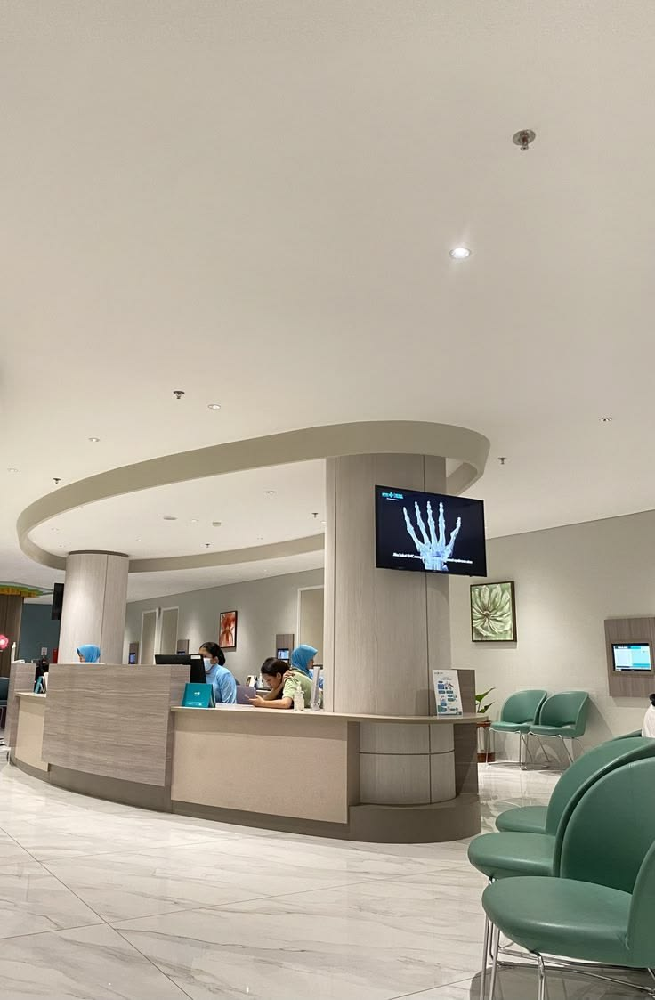
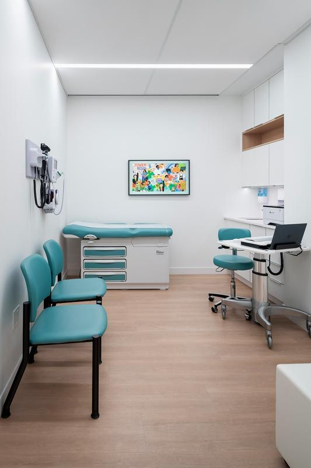

Layanan & Fasilitas Klinik
Kenyamanan Pasien dan Pelayanan Ramah adalah Prioritas Utama Kami
Staf & Resepsionis Ramah
Sejak pertama kali Anda melangkahkan kaki di Klinik Medika Ceria, tim resepsionis dan perawat kami siap menyambut dengan senyuman dan bantuan yang komunikatif.
- Registrasi pasien yang cepat dan responsif
- Pendampingan ramah untuk pasien lansia dan anak-anak
- Informasi alur pemeriksaan yang transparan
- Sistem pendaftaran antrean online tanpa perlu menunggu lama

Ruang Tunggu Nyaman & Higenis
Kami menyediakan area tunggu yang luas, bersih, ber-AC, dan tenang untuk memastikan pasien beserta keluarga merasa nyaman selama berada di klinik.
- Kursi tunggu ergonomis & ruangan ber-AC dingin
- Fasilitas Wi-Fi gratis & stasiun pengisian daya HP (charging station)
- Area bermain aman khusus untuk anak-anak (Playground)
- Sterilisasi ruangan secara berkala demi kebersihan maksimal

Ruang Periksa Dokter Terpadu
Ruang konsultasi dan periksa dokter pribadi yang terpisah, menjaga privasi pasien dengan peralatan medis lengkap dan higienis.
- Konsultasi Dokter Umum & Spesialis secara mendalam
- Poli Gigi terlengkap (Scaling, Tambal, & Cabut Gigi)
- Poli Anak khusus pemeriksaan tumbuh kembang & imunisasi
- Pemeriksaan tekanan darah, gula darah, dan konsultasi gaya hidup sehat

Fasilitas Laboratorium Modern
Pemeriksaan tes diagnostik darah dan laboratorium yang dilakukan oleh analis berpengalaman dengan hasil presisi dan cepat.
- Pemeriksaan Darah Lengkap, Kolesterol, & Asam Urat
- Tes Urin & Fungsi Organ (Ginjal / Hati)
- Paket Medical Check-Up (MCU) Hemat & Terjangkau
- Penerimaan hasil tes cepat secara digital via WhatsApp